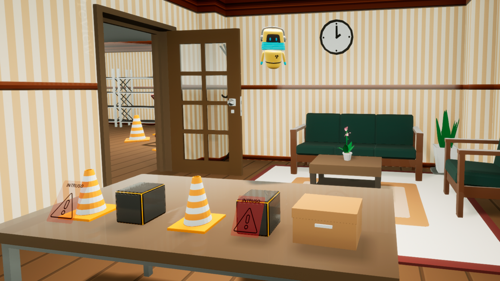
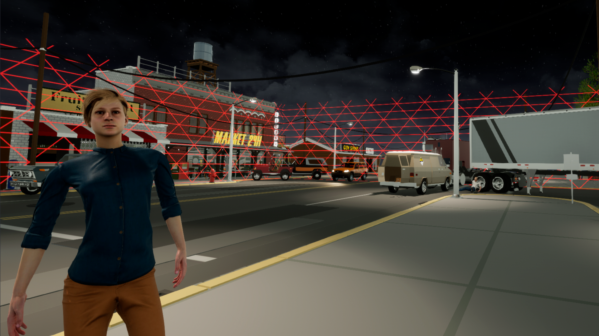
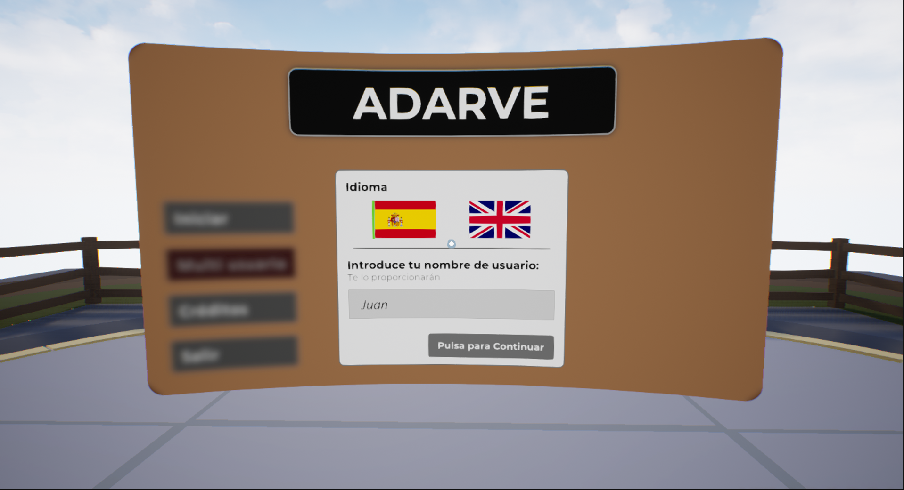
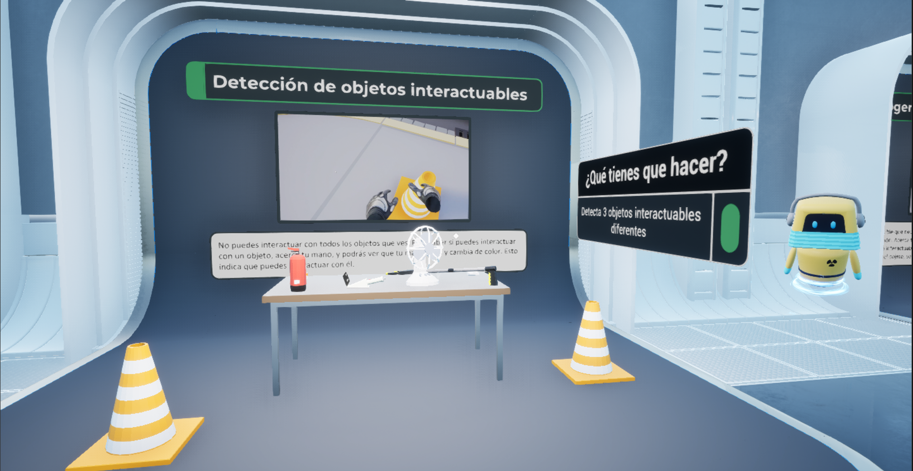
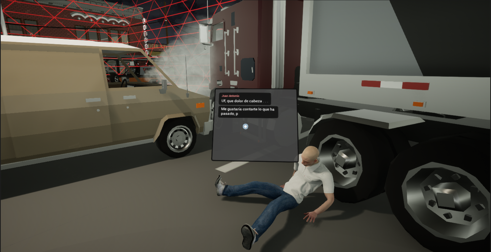

ADARVE (Análisis de Datos de Realidad Virtual para formación en Emergencias Radiológicas)
Table of Contents
1. Descripción
El proyecto ADARVE (Análisis de Datos de Realidad Virtual para formación en Emergencias Radiológicas) es un proyecto de investigación financiado por el Consejo de Seguridad Nuclear.
2. Miembros
Investigador principal:
- Carlos León <cleon@ucm.es>
Investigadores:
- Alejandro Villar
- Pablo Gervás
- Gonzalo Méndez
3. Duración
El proyecto comenzó el 21 de diciembre de 2021 y acabó el 20 de diciembre de 2025 (48 meses).
4. Objetivo
El proyecto ADARVE (Análisis de Datos de Realidad Virtual para formación en Emergencias Radiológicas) propone una combinación de avances tecnológicos en el campo de enseñanza asistida por computadora (realidad virtual, modelado de la respuesta bajo situaciones de estrés, y captura/análisis de datos) para desarrollar una herramienta de formación y entrenamiento para emergencias radiológicas.
5. Sistema

Figure 1: Captura de pantalla de la fase de iniciación a la plataforma expermiental.

Figure 2: Ejemplo de escenario de accidente con un personaje no jugador.

Figure 3: Captura de pantalla de la fase de “log-in” del usuario.

Figure 4: Ejemplo de escenario de tutorial.

Figure 5: Ejemplo de escenario de ejercicio.
6. Publicaciones
- Effectiveness of information modality in virtual reality tutorials . Alejandro Villar, Carlos León. Virtual Reality, Volume 30, article number 2: DOI: 10.1007/s10055-025-01240-y.
- Experienced video game players interaction preferences with game controllers and haptic gloves. Alejandro Villar, Sergio Baña, Juan Diego Mendoza, Laura Gómez, Javier Muñoz and Carlos León. 24th International Federation for Information Processing – International Conference on Entertainment Computing (IFIP-ICEC 2025), Tokio, 2025.
- Pruning Worlds into Stories: Affective Interactions as Fitness Function. P. Gervás and Méndez, G., in 13th International Conference on Artificial Intelligence in Music, Sound, Art and Design (EvoMUSART), Aberystwyth, United Kingdom, 2024.
- Realidad virtual para entrenamiento en emergencias radiológicas. Carlos León, Alejandro Villar Rubio, Pablo Gervás y Gonzalo Méndez. Alfa. Consejo de Seguridad Nuclear, España. Páginas 52–53. Vol. 57. DOI: https://www.csn.es/documents/10182/13557/Alfa+57/fb8a5187-763f-3651-fdc2-e454d4c6fdeb?version=1.0. ISSN (Online): 1888-8925.
- Un Modelo de Objetivos de Aprendizaje y una Metodología Basados en Tutoriales para el Entrenamiento en Escenarios de Emergencia Radiológica. Alejandro Villar Rubio y Carlos León. Revista Digital de la Asociación Interacción Persona-Ordenador (AIPO). Volumen 4, número 2 (2023). Eds: Sergio Sayago y Manel Díaz. ISSN: 2695-6578. DOI: https://revista.aipo.es/index.php/INTERACCION/article/view/96/96
- Automatic identification of secondary narratives in videogames. Alejandro Marín, Alejandro Ruiz, Carlos León. 2023. 2º Congreso Español de Videojuegos. Facultad de Informática UCM, Madrid. DOI: https://ceur-ws.org/Vol-3599/short_1.pdf
- An evaluation on the effectiveness of virtual tutorials for training emergency professionals. Alejandro Villar, Carlos León. 2023. 2º Congreso Español de Videojuegos. Facultad de Informática UCM, Madrid. DOI: https://ceur-ws.org/Vol-3599/paper_10.pdf
- Virtual Reality Skills Acquisition in Simulated Radiation Emergency Response Learning. Alejandro Villar y Carlos León. XXIII Congreso Internacional de Interacción Persona-Ordenador, Lleida (Septiembre 4-6, 2023)
- User performance Analysis in Guided and Non-Guided Stressful Virtual Reality Scenarios. Alejandro Villar y Carlos León. 10th International Conference on Human Interaction & Emerging Technologies, Niza, Francia (Agosto 22-24, 2023)
- Evolutionary combination of connected event schemas into meaningful plots. Gervás, P., Méndez, G. & Concepción, E. Genet Program Evolvable Mach 24, 7 (2023). https://doi.org/10.1007/s10710-023-09454-2
- Improving Efficiency and Coherence in Evolutionary Story Generation, P. Gervás, in 14th International Conference on Computational Creativity, Waterloo, Ontario, Canada, 2023.
- Using ChatGPT for Story Sifting in Narrative Generation, G. Méndez and Gervás, P., in 14th International Conference on Computational Creativity, Waterloo, Ontario, Canada, 2023.
- Improving performance in collaborative games through personality-based matchmaking. Alejandro Villar y Carlos León. I Congreso Español de Videojuegos, Madrid (Diciembre 1-2, 2022)
- A Discourse Interpretation Engine Sensitive to Truth Revisions in a Story, Pablo Gervás. Tenth Annual Conference on Advances in Cognitive Systems, Arlington, Virginia, 2022.
- Generating Plotlines about Attempting to Avert Disasters, Pablo Gervás. Thirteenth International Conference on Computational Creativity, 2022.